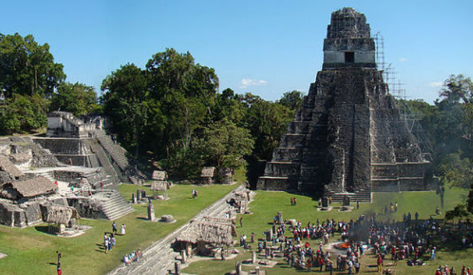

1. America
과테말라
▶ 여행시기: 12월 ~ 7월▶ 추천 장소
| 과테말라를 방문하는 사람들에게 가장 인기 있는 장소의 하나인 안티구아(Antigua: 오래된)는 그 이름처럼 오래된 풍경과 역사를 담고 있는 마을이다. 안티구아는 전형적인 스페인풍의 블록형 도시구조로 중앙에 Plaza Mayor(중앙공원) 및 시청 건물과 성당이 있다. 현재는 마을의 주요 소득원이 관광이기 때문에, 좋은 식당들과 카페가 많이 위치해 있다. 역사를 간직한 마을의 모습과 화산을 배경으로 한 마을의 풍경은 관광객들의 발길을 멈추게 하며, 치안도 안전한 편으로 늦은 밤이 아니라면 길거리를 걸어 다녀도 문제가 없는 곳이다. | |
| 안티구아에서 약 100km, 차로 2시간 정도의 거리에 있는 파나하첼은 Atitlan 호수를 중심으로 여러 마을이 자리잡고 있다. 마을과 마을을 오가기 위해서는 소형 보트를 타고 이동하는데, 호수 한가운데서 주변 절경을 바라보는 것만으로도 충분히 방문할 가치를 지닌 곳이다. 단, 농업과 커피 재배를 많이하기 때문에 방문 시 평안 신발을 착용할 것을 추천한다. 개발되지 않은 자연을 간직한 Atitlan 호수의 주변 마을들을 따라서 Hiking 하는 것은 매우 특별한 경험이 될 것이다. | |
|  | 티칼은 번성했던 문명만큼이나 보존 상태도 완성도가 높아서, 역사나 고대 문화에 관심이 없는 사람들 마저도 관심을 갖게 만드는 매력을 지닌 곳이다. 최대 65m에 달하는 피라미드는 마야 문명의 건축 기술과 문화가 상당히 발전했던 것임을 느낄 수 있다. 띠깔은 라틴 아메리카 지역의 고대 문명 중 가장 중요한 유적의 한 곳이다. |